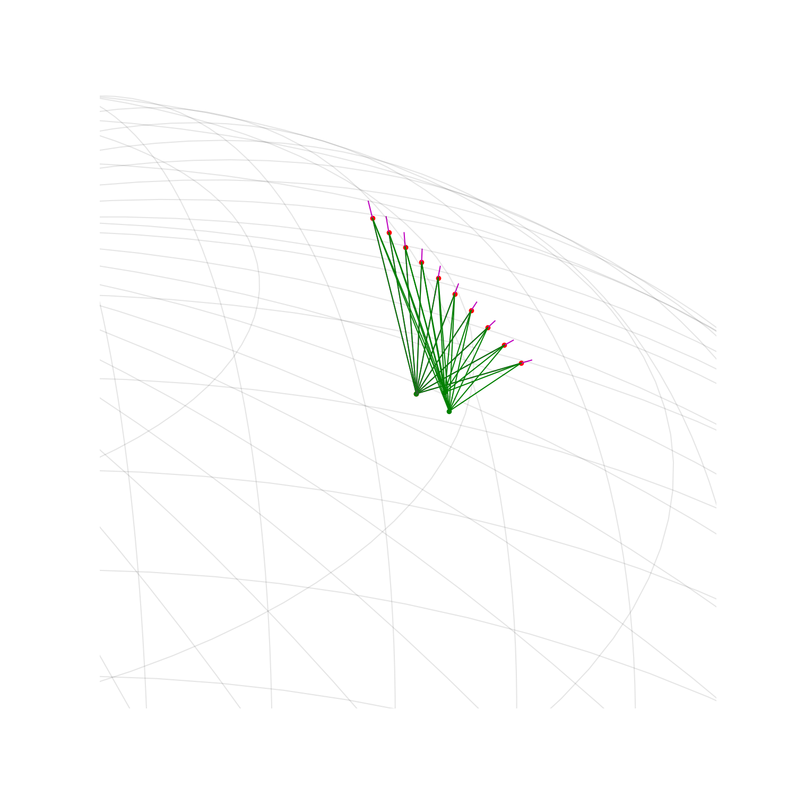

Note
Click here to download the full example code
A controller for tracing¶

Out:
-------------------------- Performance analysis --------------------------
Name | Executions | Mean time | Total time
-------------------------------+--------------+---------------+--------------
propagate | 1 | 1.21498e-02 s | 9.88 %
Tracker:generator:point_radar | 10 | 4.32634e-04 s | 3.52 %
Tracker:generator:step | 10 | 4.67253e-04 s | 3.80 %
Tracker-plot | 10 | 3.27408e-03 s | 26.62 %
Tracker:generator | 1 | 3.74935e-02 s | 30.49 %
total | 1 | 1.22976e-01 s | 100.00 %
--------------------------------------------------------------------------
import numpy as np
import matplotlib.pyplot as plt
from mpl_toolkits.mplot3d import Axes3D
import pyorb
import sorts
eiscat3d = sorts.radars.eiscat3d
from sorts.controller import Tracker
from sorts.propagator import SGP4
from sorts.profiling import Profiler
p = Profiler()
p.start('total')
prop = SGP4(
settings = dict(
out_frame='ITRF',
),
)
orb = pyorb.Orbit(M0 = pyorb.M_earth, direct_update=True, auto_update=True, degrees = True, a=6700e3, e=0, i=75, omega=0, Omega=80, anom=72)
t = np.linspace(0,120,num=10)
mjd0 = 53005
p.start('propagate')
states = prop.propagate(t, orb.cartesian[:,0], mjd0, A=1.0, C_R = 1.0, C_D = 1.0)
p.stop('propagate')
e3d = Tracker(radar=eiscat3d, t=t, ecefs=states[:3,:], profiler=p)
fig = plt.figure(figsize=(15,15))
ax = fig.add_subplot(111, projection='3d')
ax.plot(states[0,:], states[1,:], states[2,:],"or")
for tx in e3d.radar.tx:
ax.plot([tx.ecef[0]],[tx.ecef[1]],[tx.ecef[2]],'or')
for rx in e3d.radar.rx:
ax.plot([rx.ecef[0]],[rx.ecef[1]],[rx.ecef[2]],'og')
for radm, ti in zip(e3d(t),range(len(t))):
radar, meta = radm
p.start('Tracker-plot')
for tx in radar.tx:
r = np.linalg.norm(states[:3,ti] - tx.ecef)*1.1
point = tx.pointing_ecef*r + tx.ecef
ax.plot([tx.ecef[0], point[0]], [tx.ecef[1], point[1]], [tx.ecef[2], point[2]], 'm-')
for rx in radar.rx:
r = np.linalg.norm(states[:3,ti] - rx.ecef)
point = rx.pointing_ecef*r + rx.ecef
ax.plot([rx.ecef[0], point[0]], [rx.ecef[1], point[1]], [rx.ecef[2], point[2]], 'g-')
p.stop('Tracker-plot')
sorts.plotting.grid_earth(ax)
dx = 600e3
ax.set_xlim([e3d.radar.tx[0].ecef[0]-dx, e3d.radar.tx[0].ecef[0]+dx])
ax.set_ylim([e3d.radar.tx[0].ecef[1]-dx, e3d.radar.tx[0].ecef[1]+dx])
ax.set_zlim([e3d.radar.tx[0].ecef[2]-dx, e3d.radar.tx[0].ecef[2]+dx])
p.stop('total')
print(p.fmt(normalize='total'))
plt.show()
Total running time of the script: ( 0 minutes 0.478 seconds)